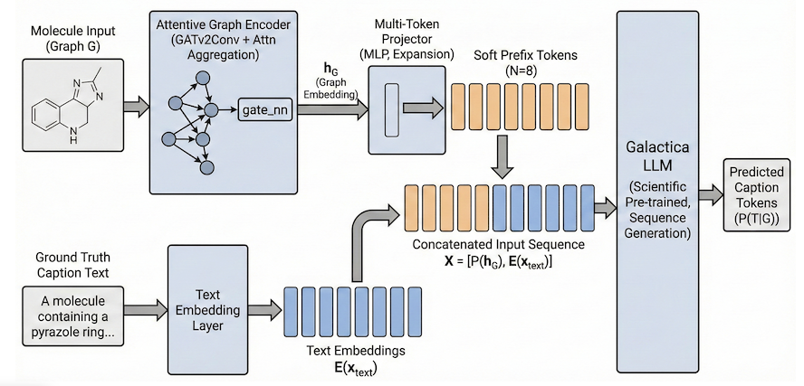

ALTeGraD Kaggle Challenge · Team HeisenBERT
Molecular Graph Captioning
A multimodal learning project that bridges molecular structure and scientific language by comparing graph-text contrastive alignment with end-to-end conditional caption generation.
1. Problem and objective
Molecular graph captioning requires a model to translate a structured chemical representation into a fluent natural-language description. Each molecule is represented as a graph whose nodes encode atoms and whose edges encode chemical bonds. The target caption may describe the molecule's chemical family, structural properties, biological role or metabolic function.
The central difficulty is the modality gap: graph encoders reason over topology and bond attributes, whereas language models operate over token sequences. Our objective was to determine whether this gap is better addressed through a shared embedding space or through direct conditioning of a scientific language model on learned molecular features.
2. Proposed approaches
Contrastive graph-text alignment
A molecular graph encoder and a SciBERT text encoder are trained to map paired graphs and descriptions into the same normalized latent space. At inference time, a graph embedding is used to retrieve the most similar caption from a reference corpus.
- Three GINEConv layers integrate atom and bond attributes.
- Discrete node and edge features are embedded and summed into dense representations.
- Global additive pooling creates one graph-level vector.
- SciBERT provides domain-specific text representations.
- LoRA enables parameter-efficient adaptation of the text encoder.
Generative molecular captioning
The second approach models the task directly as conditional generation, P(T|G). An attentive graph encoder produces a molecular representation that is converted into continuous prefix tokens and prepended to the input of a scientific language model.
- Three GATv2Conv layers dynamically weight neighboring atoms.
- AttentionalAggregation focuses on salient functional groups.
- A projector expands the graph vector into eight soft tokens.
- The tokens condition the Galactica 125M language model.
- Captions are produced autoregressively until an end token is generated.
Contrastive pipeline
The contrastive objective uses a temperature-scaled similarity matrix over every graph-text pair in a batch. A symmetric cross-entropy loss optimizes both graph-to-text and text-to-graph retrieval, increasing the similarity of matched pairs while separating mismatched pairs.

We also evaluated an auxiliary adversarial discriminator intended to enforce modality-invariant graph and text representations. It was alternately trained to identify the embedding modality while the encoders learned to fool it. In practice, this additional objective did not produce a meaningful performance gain.
Generative pipeline
Inspired by MolCA, the generative architecture replaces a single graph vector with a sequence of learned prefix embeddings. These graph-derived tokens occupy the same dimensional space as Galactica's word embeddings, allowing the language model to condition every generated token on molecular structure.

3. Training protocol
Contrastive model
- Trained for up to 30 epochs.
- Approximately 3 minutes per epoch.
- L2-normalized graph and text embeddings.
- Learnable temperature, clamped to prevent instability.
- Best checkpoint selected using validation performance.
Generative model
- Limited to 10 epochs by memory and overfitting constraints.
- Approximately 10 minutes per epoch.
- Graph encoder and projector learning rate: 10-3.
- Galactica learning rate: 5 × 10-5.
- Graph prefix positions ignored in the causal language-modeling loss.
For the generative model, the input sequence is the concatenation of the projected graph prefix and the caption token embeddings. The shifted cross-entropy loss is applied only to the textual positions, so the model learns to predict the description from the graph without attempting to reconstruct the continuous prefix itself.
4. Results and analysis
| Approach | Backbone | Training epochs | Kaggle score |
|---|---|---|---|
| Contrastive | SciBERT + GNN | 10 | 0.56 |
| Generative | Galactica 125M | 10 | 0.60 |
| Contrastive | SciBERT + GNN | 30 | 0.66 |
Retrieval quality
The best contrastive model achieved an MRR of 0.7704, meaning that the correct description was typically ranked between first and second. Its Recall@1 was 0.6450, while Recall@10 reached 0.9670. The latter result shows that the learned joint space reliably clusters semantically compatible molecular graphs and captions.
Qualitative generation
After 10 epochs, the generative system was already capable of reproducing specific chemical and biological information rather than merely producing generic chemistry vocabulary.
The molecule is tetraanion of ADP-D-ribose 2'-phosphate. It has a role as a human metabolite. It is a purine ribonucleoside 5'-diphosphate, a member of adenosines and a carbohydrate phosphate.
The molecule is tetraanion of ADP-D-ribose 2'-phosphate. It has a role as a human metabolite. It is a purine ribonucleoside 5'-diphosphate...
Discriminator ablation
Adding an adversarial discriminator to the contrastive framework did not significantly improve the challenge score or retrieval metrics. The symmetric contrastive loss was already sufficient to align the two modalities, while the discriminator introduced additional optimization complexity.
5. Limitations
- Generative overfitting: validation loss began to diverge around epoch 7, suggesting that Galactica was memorizing recurring descriptions instead of learning a fully general structural-to-text mapping.
- Compute constraints: GPU memory limited the study to Galactica 125M and restricted the generative training duration.
- Unequal optimization budgets: the contrastive model was trained for 30 epochs, while the generative model was stopped at 10 epochs.
- Retrieval dependence: the contrastive system can only return descriptions available in its candidate corpus, whereas direct generation is more flexible but more prone to hallucination.
6. Future work
- Scale the scientific language model to larger Galactica variants, provided that a larger training set is available to control overfitting.
- Combine molecular graphs with SMILES strings to fuse topological and sequential chemical representations.
- Introduce graph-language cross-attention for finer interaction between molecular regions and generated words.
- Apply graph augmentation and stronger regularization, including subgraph masking, node dropping and increased weight decay.
- Explore generation-assisted retrieval: generate a candidate caption, then use it to retrieve the closest verified description from the corpus, reducing hallucination risk.
Conclusion
The project demonstrates that both retrieval-based alignment and direct generation are viable strategies for molecular graph captioning. The contrastive SciBERT-GNN architecture was the most robust option under the available computational budget, while the Galactica-based system showed stronger early performance and greater linguistic flexibility. Together, these results support further work on hybrid graph-language models for drug discovery, chemical search and automated scientific reporting.
References
- ALTeGraD Kaggle Challenge, Molecular Graph Captioning, 2025.
- Liu et al., MolCA: Molecular Graph-Language Modeling with Cross-Modal Projector and Uni-Modal Adapter, 2023.
- Radford et al., Learning Transferable Visual Models From Natural Language Supervision, 2021.
- Taylor et al., Galactica: A Large Language Model for Science, 2022.